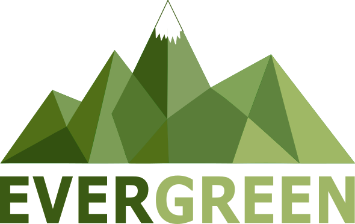

Esto puede tardar 1-3 minutos
Cargando app de elevación...
Cargando explorador de biodiversidad...
Evergreen ofrece servicios profesionales de interpolación, corrección de sesgo local y validación con estaciones en superficie.